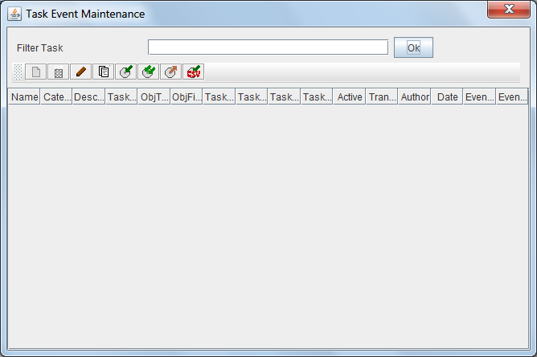

Add a new element
Add a new element Create a new item as a copy of the selected item
Create a new item as a copy of the selected item Export the selected item
Export the selected itemBy selecting the option to manage Events Tasks, will appear the form "List of Event Tasks". This form allows you to maintain and define the Events Tasks.
OPD includes the ability to define tasks related to events. These tasks will be triggered when an event of a specified kind occurs in an object of type document or type folder. The events that can be associated tasks are object creation, modification and deletion. For example you can define an event that occurs when a document of type "Feasibility Report" is created, or other event whenever a folder type "Medical Record" is deleted. In transaction mode, the insert and update event occurs immediately AFTER the insert or update, while the delete event is started immediately BEFORE deleted.
These events apply to a document type and all its subtypes. First the tasks associated to the parent type are executed. Then continue running tasks for subtypes according to the order of "inheritance", and within each type, in order of sequence. For each event and document type should be defined execution order by a sequence number (which need not be consecutive). For example, if you defined three tasks related to the insertion of a document of a particular type, with the names and following sequences: "Task A" (3) "Task B" (5), "Task C" (2 ). Tasks are executed in the order C, A, B.
The list of pending task can be reviewed in List of pending task and the list of ended tasks in List of ended tasks. It is the responsibility of the administrator to delete the information from the completed tasks to prevent excessive growth of database tables and reduce performance.
The system has big scalability. In a small system, one computer can generate and run all the tasks; in a big system, 1 or 2 computers can generate the "work orders" from the task and several computers run the generated "work orders", each one "specialized" in a category.
Tasks can be defined as transactional or not. All transactional tasks associated with an event (eg. Delete) will be executed with the event, ensuring integrity, so that either all operations are canceled or all are performed. This ensures data consistency but is an overload for the operation.
In the case of non-transactional tasks, a work order for later execution as in scheduled tasks will be generated, and will be shown in pending or ended task. If the task is transactional, it will run on the same computer on which the event (insert, update or delete) occurs. If not transactional in the equipment assigned to that category of tasks (or assigned to all).
Tasks can be turned on and off, so that they can be fully defined and tested but not executed until needed. They can again be turned off when required. Activation controls the generation of the "work order", ie if a task is off, no "work orders" are generated.
To filter the Task or list of Tasks you want to review, just enter part of the name in the text box and press "ok". The list of Tasks that meet the conditions will be shown on the results table. Pressing the button without entering any value you see all the elements on which the user has permission. The results table shows the data:

This results table can be sorted by selecting the header of each column. You can also change the size of each column by dragging the separator line in the headers.
Above the table of results there are several buttons for performing operations on the selected item. The available operations are:
Add a new element Create a new item as a copy of the selected item Export the selected itemIt should be noted on export and import, that some elements may have dependency on others, so you must export all related and imported at the time of it in the proper order.
In the event of an error (lack of user permissions, data inconsistency, etc.), the operation is canceled and will present the reason for the error to the user.
View Event Tasks Maintenance, Panding Tasks List y Ended Tasks List